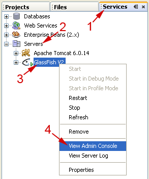
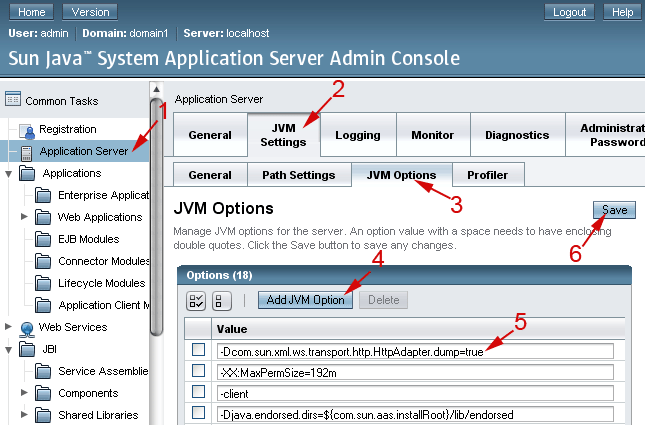

Ejercicios de Servicios Web Avanzados
En la mayoría de ejercicios de esta sesión lo que nos interesará no es simplemente ver que el servicio funciona, sino ver como funciona. Por ejemplo, para estudiar la optimización de mensajes, el intercambio fiable de mensajes, o la seguridad, lo importante será ver qué efecto tiene aplicar estas técnicas sobre los mensajes que se intercambian. Por lo tanto configuraremos el servidor de aplicaciones de forma que vuelque a la consola el contenido de todos los mensajes transmitidos. Para ello entraremos en la consola de administración del servidor (Services > Servers > Grassfish V2 > View Admin Console).

Una vez dentro de la consola, nos logueamos y vamos a Application Server > JVM Settings > JVM Options, pulsamos sobre Add JVM Option y en el nuevo hueco creado añadimos la siguiente opción:
-Dcom.sun.xml.ws.transport.http.HttpAdapter.dump=true

Tras esto pulsamos Save para guardar los cambios en las opciones.
Optimización de datos binarios
Vamos a crear un servicio web que devuelva datos binarios, en un proyecto al que llamaremos servcweb-sesion03-binario. Definiremos una única operación que devuelva un array de 5 bytes dentro de un servicio llamado BinarioSW:
public byte [] getData() {
return new byte[5];
}
Se pide:
a) Probar el servicio (con el cliente de prueba) y observar en la consola de Glassfish como se codifica en el mensaje de respuesta el contenido devuelto.
b) Configurar el servicio para que utilice MTOM y volver a probarlo. ¿Qué diferencia existe en el mensaje de respuesta con respecto a la ejecución anterior?
c) Vamos a añadir una nueva operación al servicio que devuelva una imagen (Image). Comprobar el funcionamiento de esta operación con y sin activar MTOM. ¿Cuál es la forma más eficiente de enviar estos datos?
Envío fiable de mensajes (*)
Vamos a probar el funcionamiento del envío fiable de mensajes. Para ello utilizaremos el servicio web del ejercicio anterior (servcweb-sesion03-binario) y crearemos un cliente web para acceder a él, al que llamaremos servcweb-sesion03-binariocliente.
Se pide:
a) Desactivar la opción MTOM del servicio. Invocar la operación getData desde un servlet y observar los mensajes que se intercambian.
b) Activar la opción de envío fiable y observar los mensajes que se intercambian en este caso.
c) Vamos a activar las opciones de asegurar la entrega de mensajes en orden y de control de flujo. Observar la secuencia de mensajes que se produce en este último caso al invocar el servicio.
d) Si esperamos un tiempo desde que se enviaron los primeros mensajes, ¿qué ocurre? ¿Cómo podemos evitar que se sigan enviado mensajes después de haber hecho la llamada?. Introducir el código necesario en el cliente para solucionar el problema.
Carrito de la compra
Vamos a crear un servicio web con estado que nos permita mantener un carrito de la compra. Deberemos crear un nuevo proyecto web servcweb-sesion03-carrito con los siguiente elementos:
-
LineaVentaTO: Objeto que encapsulará los datos de cada artículo añadido al carrito:
- Nombre del artículo
- Cantidad
- Precio unitario
-
TiendaSW: Servicio web que nos permitirá crear un nuevo carrito de la compra. Tendrá la
siguiente operación:
- W3CEndpointReference creaCarrito()
-
CarritoSW: Servicio web con estado que implementa el carrito de la compra. Mantendrá una
lista de productos vendidos (LineaVentaTO), y deberá definir las siguientes operaciones:
- void addProducto(String nombre, int cantidad, float precio)
- float getImporteTotal()
- void finalizarCompra()
No es necesario crear ninguna base de datos. La lista de productos se guardará en memoria, y al finalizar la sesión se perderá.
Una vez implementado el servicio, desarrollar un cliente Java (servcweb-sesion03-carritocliente) que lo utilice. Se puede probar con un código similar al siguiente:
carrito.addProducto("Tambor 25 DVD grabable", 2, 13.95f);
carrito.addProducto("Pendrive 4GB", 1, 19.95f);
System.out.println("Importe actual: " + carrito.getImporteTotal());
carrito.addProducto("Monitor TFT 19inch", 1, 179.90f);
System.out.println("Importe final: " + carrito.getImporteTotal());
carrito.finalizarCompra();
Servicio web transaccional (*)
Vamos a crear un servicio web que soporte transacciones. En las plantillas de la sesión encontramos un proyecto de nombre servcweb-sesion03-vuelos que contiene un servicio web que nos permitirá hacer reservas de vuelos. Se pide:
a) Cargar el proyecto en Netbeans. Aparecerá una advertencia, debido a que no tendremos configurada la base de datos que necesita el proyecto. Entrando en la pestaña Files veremos que el proyecto contiene un directorio db con un script SQL para crear la base de datos, y un buildfile de Ant para ejecutarlo. Comprobamos en el fichero build.xml que el login y password para acceder a la base de datos son correctos, y ejecutamos el objetivo initBD (con el servidor de MySQL en marcha). Una vez hecho esto, creamos con Netbeans (en la pestaña Services > Databases) la conexión a la base de datos con URL jdbc:mysql://localhost/vuelos. Con esto el proyecto deberá reconocer correctamente la base de datos, y ya no aparecerá la advertencia.
b) Desplegamos el proyecto y comprobamos que el servicio funcione correctamente mediante su cliente de prueba.
c) Vamos a hacer que la operación realizaReserva del servicio soporte transacciones, utilizando el modo Required.
d) Creamos un cliente web para el servicio. Para ello crearemos un proyecto web de nombre servcweb-sesion03-vueloscliente, y dentro de él un servlet desde el cual invocaremos el servicio.
e) Añadimos en el servlet código para dar de alta a 5 personas en el vuelo 815. El código puede ser similar al siguiente:
VuelosSW port = service.getVuelosSWPort();
int vuelo = 815;
ut.begin();
boolean reservado1 = port.realizaReserva(vuelo, "12345678X",
"Miguel Lopez");
out.println("<p>Reservado 1 = "+reservado1 + "</p>");
boolean reservado2 = port.realizaReserva(vuelo, "64332423B",
"Alberto Zamora");
out.println("<p>Reservado 2 = "+reservado2 + "</p>");
boolean reservado3 = port.realizaReserva(vuelo, "68372847A",
"Ana Martinez");
out.println("<p>Reservado 3 = "+reservado3 + "</p>");
boolean reservado4 = port.realizaReserva(vuelo, "23287877T",
"Manuel Gomez");
out.println("<p>Reservado 4 = "+reservado4 + "</p>");
boolean reservado5 = port.realizaReserva(vuelo, "94723535Q",
"Laura Perez");
out.println("<p>Reservado 5 = "+reservado5 + "</p>");
Al ejecutar este servlet veremos que algunos consiguen la reserva, pero otros no. Comprobar en la base de datos las reservas que han quedado grabadas.
f) Este es un grupo de personas que desean viajar juntas, por lo que si para una de ellas no se consigue reserva tampoco se deberán reservar las demás. Vamos a utilizar transacciones para solucionar este problema.
g) Recuperar la base de datos original mediante el buildfile disponible en el directorio db, y volver a probar a hacer las reservas. Comprobar que en este caso, si uno de ellos no puede reservarse, tampoco se graben el resto de reservas.
h) Cambiar el vuelo al 1623 y volver a probar a hacer la reserva. ¿Qué ocurre ahora? Comprobar los datos que han quedado almacenados en la base de datos. ¿Y si intentamos ejecutar el servlet una segunda vez?